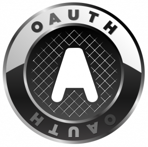

记录一下最近对oauth的了解。

oauth是什么
官网对oauth的定义：
An open protocol to allow secure API authorization in a simple and standard method from desktop and web applications.
网络开放是一个不变的趋势，那么不可避免的会有各种网络服务间分享内容的需要。OAuth就是为了解决这个问题而诞生的，用户访问第三方资源，不再需要网站提交你的用户名，密码。这样好处自己是安全，而且不会泄露你的隐私给不信任的一方。
举个我们身边国内的例子吧，说明oauth基本的流程和解决的问题：
人人网想要调用QQ邮箱的联系人列表，现在的方法是你需要在人人网输入你的QQ号，QQ密码才能调用，虽然网站上可能都自谓“不保留QQ用户名密码”，但是大家信吗？所以上面这种情况对于用户来说就是不安全的，人人网可能保存我们的QQ密码，oauth就是用来解决这个问题。流程如下：
人人网要访问用户QQ邮箱的联系人列表，首先跳转到QQ邮箱的oauth接口，如果用户同意访问，就输入用户名和密码，告诉QQ邮箱自己授权人人网访问自己的联系人列表。这里输入用户名和密码是在QQ邮箱接口下，所以是安全的。
oauth的流程
oauth常见的有oauth 1.1和oauth 2.0两个版本，现在绝大部分网站都是使用oauth 2.0版本。
一个典型的OAuth应用通常包括三种角色，分别是：
- Consumer：消费方，上面的案例中人人网就是消费方
- Service Provider：服务提供者，上面的案例中QQ邮箱就是服务提供方
- User：用户
消费方如果想使用服务提供者的OAuth功能，通常需要先申请两样东西：
- Consumer Key
- Consumer Secret
一个典型的OAuth流程，这里描述的OAuth，被称为三条腿的OAuth（3-Legged OAuth），这也是OAuth的标准版本。：

OAUTH2的四种角色
oauth2中角色的命名和oauth1.1稍有不同，如下所示：
- resource owner资源所有者：比如twitter用户，他在twitter的数据就是资源，他自己就是这些资源的所有者。
- resource server资源服务器：保存资源的服务器，别人要访问受限制的资源就要出示 Access Token（访问另牌）。
- client客户端：一个经过授权后，可以代表资源所有者访问资源服务器上受限制资源的一方。比如 开发者开发的应用。
- authorization server授权服务器：对 资源所有者进行认证，认证通过后，向 客户端发放 Access Token（访问另牌）。
开发者需要做什么
我们在开发app中要将文字、图片、视频等分享到社交网站，那么我们的app就是oauth中的消费方（或者叫做client端）。那么我们就需要向社交网站申请Consumer Key和Consumer Secret。然后根据社交网站提供的oauth接口进行上传等操作。
ios的sdk中提供social framework用于社交化分享，其实就是Apple公司在social framework中集成了向社交网站申请Consumer Key和Consumer Secret。
有一个ios的第三方开源库，封装了消费者端oauth认证的细节，OAuthConsumer。